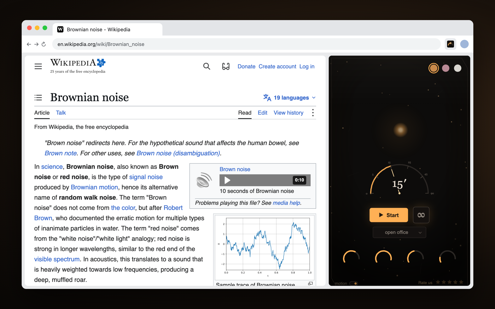
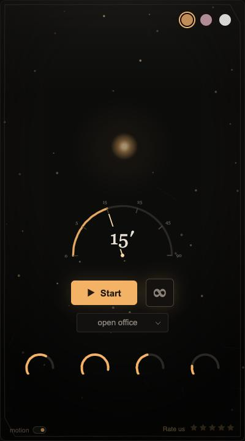
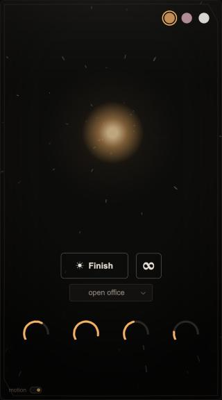
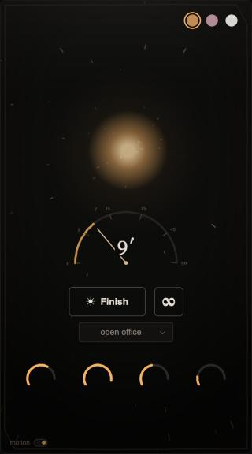
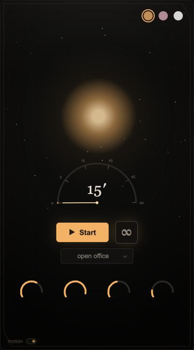
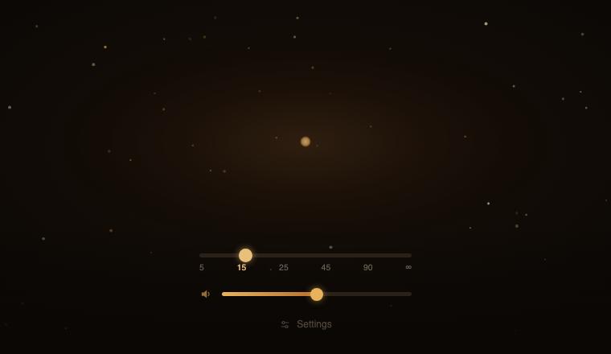

Brown, pink or white noise for work and study, computed on the device while you work. Nothing is streamed and nothing is played from a file. The timer is optional: with it on, the session is a flight toward a star, and the sound fades out on arrival.

Every sound is computed in the browser. The core is brown noise. Above it sit a layer of pink noise for air, a layer of space, and a slow drift that keeps the sound from standing still. Nothing changes in steps: a sudden change pulls attention away from the work.
Pink and white noise have their own sources and filters. Brown stays the default and sounds exactly as it did before the other two were added. Over the noise there is an optional tone layer with one knob; it follows the phases of the session.
The picture is computed from the sound, and the panel has no settings for how it looks. The colour of the interface is the colour of the noise; the glow of the star is the volume. There is one switch, motion, which stops the movement for people it bothers.




It is made first of all for adults with ADHD. Two moments are hard for them: getting started and being pulled out of the work. The sound rises gently at the start and fades on arrival. There is no bell.
A user wrote that the panel had become too noisy: the grain on the screen and the big dial. I removed the grain completely. The star is small at rest again and grows as you fly. The dial unwinds like a kitchen timer. In flight it shows only under the mouse.
Renamed to Brown Noise Generator, with a new panel, icon and listing in 53 languages in one release. The picture now follows the sound.
Four rules for the timer. Only the dial sets the length; a preset changes only the room. ∞ is a mode with no countdown. Changing the length mid-session starts it again from full. Finish ends the flight and the sound.
Reversed the centre a second time. The sound leads; the timer is useful but optional.
Added pink and white noise as their own sources, so that the words “pink noise generator” in the listing are a fact.
1.1.0 added the tone layer over the noise, as much or as little of it as you want.
The screen became a starfield with the star as the destination. Before that it was an ember in a ring.

The first reversal: use showed the timer is the centre, and sound is what time is made of.
Time is carried by noise, and it drifts slowly instead of changing in steps.